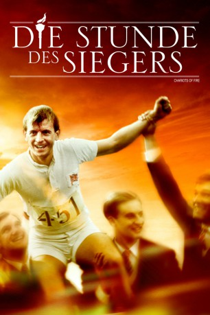
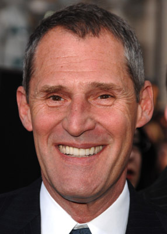
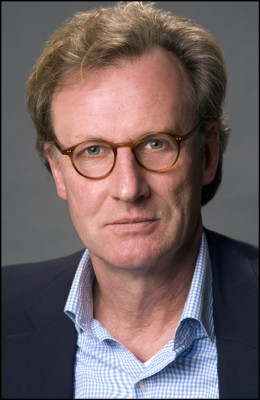
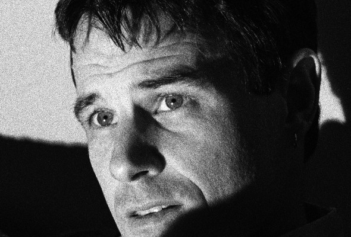
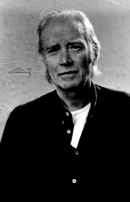
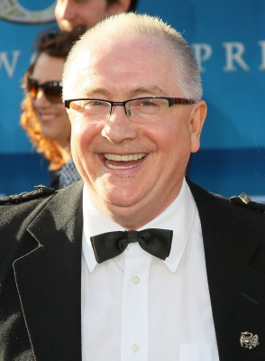

#2355 Die Stunde des Siegers
Alternativ: Chariots of Fire
Auszeichnungen: 4 Oscars gewonnen für 3 Oscars nominiert 1 GoldenGlobes gewonnen 3 BAFTA-Awards gewonnen
 
 IMDB-Wertung: 7.2 / 10
IMDB-Wertung: 7.2 / 10  Metascore: 78
Metascore: 78 
Olympische Spiele 1924 in Paris. Die zwei Engländer, Harold Abrahams und Eric Lidell, gewinnen völlig überraschend eine Goldmedaille. Der eine im 100 m Lauf, der andere über 400 m. Die Siege der beiden Ausnahmeathleten haben ihren besonderen Hintergrund, denn nicht nationaler Stolz, Ruhm und Geld sind für sie der Antrieb zu fast selbstzerstörerischen Leistungen, sondern individueller Ehrgeiz und Überzeugungen.
Jahr: 1981
Dauer: 125 Minuten
FSK: 12
Land: England Studio: Twentieth Century Fox Home Entertainment GermanyTonspuren: DTS - ,
Untertitel: Deutsch,
Auflösung: 1080p (1920x1040) Größe: 10076 MB
Genre: Drama, Sport, Geschichte
Regisseur: Hugh Hudson
Drehbuch: Colin Welland
Soundtrack: Vangelis
Darsteller:
 Nicholas Farrell als Aubrey Montague
Nicholas Farrell als Aubrey Montague Nigel Havers als Lord Andrew Lindsay
Nigel Havers als Lord Andrew Lindsay- Ian Charleson als Eric Liddell
-  Ben Cross als Harold Abrahams
-  Daniel Gerroll als Henry Stallard
 Ian Holm als Sam Mussabini
Ian Holm als Sam Mussabini John Gielgud als Master of Trinity
John Gielgud als Master of Trinity- Lindsay Anderson als Master of Caius
 Nigel Davenport als Lord Birkenhead
Nigel Davenport als Lord Birkenhead- Cheryl Campbell als Jennie Liddell
 Alice Krige als Sybil Gordon
Alice Krige als Sybil Gordon Dennis Christopher als Charles Paddock
Dennis Christopher als Charles Paddock-  Brad Davis als Jackson Scholz
- Peter Egan als Duke of Sutherland
-  Struan Rodger als Sandy McGrath
- Richard Griffiths als Head Porter-Caius College
- Alan Polonsky als Paxton
- Philip O'Brien als American Coach
-  Patrick Doyle als Jimmie
- Ruby Wax als Bunty
 Michael Lonsdale als
Michael Lonsdale als  Kenneth Branagh als Cambridge Student - Society Day crowd , uncredited
Kenneth Branagh als Cambridge Student - Society Day crowd , uncredited Stephen Fry als Singer in 'H.M.S. Pinafore' , uncredited
Stephen Fry als Singer in 'H.M.S. Pinafore' , uncredited Patrick Magee als Lord Cadogan
Patrick Magee als Lord Cadogan David Yelland als Prince of Wales
David Yelland als Prince of Wales- Yves Beneyton als George Andre
- Jeremy Sinden als President-Gilbert & Sullivan Society
- Gordon Hammersley als President-Cambridge Athletic Club
- Andrew Hawkins als Secretary-Gilbert & Sullivan Society
 John Young als Reverend. J.D. Liddell
John Young als Reverend. J.D. Liddell- Benny Young als Rob Liddell
- Yvonne Gilan als Mrs Liddell
- Jack Smethurst als Sleeping Car Attendant
- Gerry Slevin als Colonel John Keddie
 Peter Cellier als Head Waiter-Savoy
Peter Cellier als Head Waiter-Savoy- Stephen Mallatratt als Watson
- Colin Bruce als Taylor
- Edward Wiley als Fitch
- Ralph Lawton als Harbour Master
- John Rutland als Caius Porter
- Alan Dudley als Caius Manservant
- Tommy Boyle als Reporter
- Kim Clifford als Sybil's Maid
- Wallace Campbell als Highland Provost
- David John als Ernest Liddell
- Tess Dignan als Schoolgirl
- Michael Jeyes als Footman
- David Kivlin als First Scots Boy
- Eddie Hughson als Second Scots Boy
- Gayle Garyson als
Datei: X:\1981\Stunde des Siegers, Die (1981, FSK12, 1920x1040).mkv seit 02.11.2015
Festplatte: HD 1980-1986
 Es gibt insgesamt 33 Filme in der Gruppe '1981'
Es gibt insgesamt 33 Filme in der Gruppe '1981'